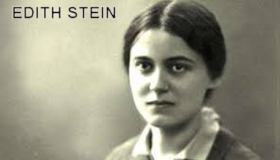
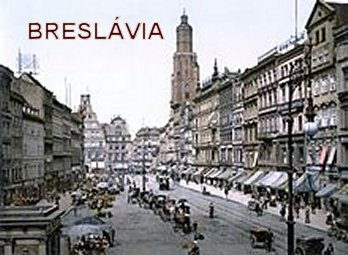

“COM PERSONALIDADE MARCANTE”
SUA FAMÍLIA
Edith nasceu no dia 12 de
Outubro de 1891, em Breslávia na Alemanha, exatamente no dia da Festa Principal
dos Judeus, “Yom Kippur”
(Dia da Reconciliação). Era também a
última de uma família com 11 filhos, dos quais 4 morreram ainda jovens. No
Batizado o seu nome completo guardou o sobrenome dos pais: “Edith Theresa Hedwing Stein”. Seu pai era o senhor Siegfried Stein e a mãe, a senhora Augusta Courant Stein.
Moravam numa grande casa na Rua De Michaelis, na cidade de Breslávia. Seus pais tinham
negócios de madeira, e o pai faleceu numa viagem de negócios, quando ela não tinha
completado dois anos de idade. Apesar dessa realidade, a mãe viúva assumiu corajosamente
a frente do negócio de madeiras, colocou a filha mais velha Elza para assumir os
cuidados da casa, e ela a mãe amorosa de sempre, continuou com a educação
dos filhos, com o mesmo rigor e o melhor carinho. Isto porque, a senhora
Augusta era uma mulher extraordinária, de extrema retidão e profundamente
apegada à fé e à tradição dos seus pais. Assim, soube enfrentar com dignidade e
inteligência, os negócios da família e a educação dos filhos.
MENINA IDEALISTA
Edith era uma menina notável com uma
memória impressionante e uma vontade de ferro! Ainda pequena nos braços de seu irmão
Paulo, que tinha 20 anos de idade, mostrava-lhe um grande livro de história da literatura,
bem ilustrado, e lhe ensinava os nomes dos poetas, as suas obras e as datas principais.
A família ficava admirada como ela conseguia guardar todos aqueles detalhes.
Quando participava das conversas dos irmãos em casa, e dos jogos culturais como
distração, geralmente espantava a todos com suas intervenções sempre
inteligentes.
Todavia, aos poucos, Edith foi
se transformando e deixando de lado aquela imagem de que sabia tudo.
Crescia em idade e em sabedoria, e todo aquele carinho da família ela guardava
bem arrumado, e bem fechado no fundo do seu coração. Já com sete anos de idade
se comportava como uma menina mais calma e sonhadora. Todavia a vontade de
vencer, de concretizar os seus ideais, permaneciam bem vivos e vibrante na sua
alma.
Também não se esquecia de nada,
dos aniversários, das brincadeiras pelos nomes, assim como amava com todo o
carinho a seus irmãos, e dedicava um apaixonado amor por sua mãe. Inclusive se
orgulhava de pertencer aquele povo, cuja fé e força moral ela sempre admirou.
Era uma família judaica bem unida.
LUTA PELOS DIREITOS DA MULHER

E por essa razão, provavelmente
inspirada na figura materna, a quem amava com todo o seu carinho, nos tempos de
Ginásio e Colégio, Edith que também tinha um espírito ativo e dedicado, começou
a fazer parte, com grande entusiasmo, de grupos feministas mais ousados. Não
tipo de grupos guerreiros, com passeatas pela cidade. Mas através de reuniões
fechadas, onde discutiam e buscavam evidenciar os seus direitos. Entretanto, na
continuidade dos anos ela foi aos poucos acalmando o seu entusiasmo. Direcionou
sua luta através de um espírito mais tranquilo e obediente, assim como mais
dedicado ao serviço. Todavia, o ideal de valorização da mulher permaneceu sempre
vivo em sua mente. Nas suas pregações, a palavra era taxativa:
“A mulher deve estar ao lado do homem,
não no lugar dele, e nem mesmo num degrau abaixo dele”. E na realidade, ela podia se manifestar assim, porque desde os anos da
juventude, teve a oportunidade de demonstrar como se pode e se deve valorizar
as próprias qualidades e capacidades, assim como, os próprios interesses intelectuais.
E isto, tanto a mulher como o homem podem fazer de modo brilhante e perfeito.
ESTUDOS UNIVERSITÁRIOS
Seu tio, irmão do seu falecido
pai, queria que ela estudasse Medicina, inclusive prometeu abrir uma Clinica
para ela e outra de suas irmãs. Mas Edith se matriculou na Faculdade de
Filosofia, sustentando que toda mulher tem o direito de escolher a sua
profissão.
Contudo, durante as aulas, não
poucas vezes se encontrava sozinha na sala. Parecia uma ilha cercada por um mar
de homens. Ela era a única mulher a frequentar a Faculdade de Filosofia de
Breslávia. Seu professor, dirigindo-se aos estudantes, esclarecia:
“Quando digo meus senhores,
quero naturalmente também me dirigir àquela senhorita ali”. E apontava o dedo para ela, que era justamente a única
jovem aluna. Depois, com um ligeiro sorriso ela confessava que mesmo sentindo
uma grande vontade de rir, permanecia séria e compenetrada no seu lugar.
BUSCA DO DEUS PESSOAL
Entretanto, Edith desejava mais
e tinha os seus mistérios particulares. Ela sempre confirmava que não se
esquecia e amava o que possuía. Todavia continuava a pesquisar conscientemente,
porque sentia na sua realidade, que ainda buscava caminhos da vida na pesquisa
do “ser” e da
“existência”. Ela ainda não estava
conseguindo enxergar através do “Talmud Israelita”e da
“Bíblia Católica”,
a vereda que lhe conduzisse a crer num
“DEUS Pessoal”. E esta impressão ela guardava desde os tempos de Ginásio e
Colégio. Mesmo assim, envolvida pelo ambiente não-religioso das colegas na
Escola e principalmente na Faculdade, não abandonou completamente os ritos
praticados pela família, para não entristecer sua mãe. Mas deixou que o DEUS de
Israel se afastasse cada vez mais, até o ponto dela se professar atéia. E seu
ateísmo era reforçado pelo ambiente secular da Universidade. Ela intimamente não
era e nunca foi contra DEUS. Ela sempre acreditou. Mas, por conta daquele
ambiente, ela somente tinha se esquecido DELE.
pesquisar conscientemente,
porque sentia na sua realidade, que ainda buscava caminhos da vida na pesquisa
do “ser” e da
“existência”. Ela ainda não estava
conseguindo enxergar através do “Talmud Israelita”e da
“Bíblia Católica”,
a vereda que lhe conduzisse a crer num
“DEUS Pessoal”. E esta impressão ela guardava desde os tempos de Ginásio e
Colégio. Mesmo assim, envolvida pelo ambiente não-religioso das colegas na
Escola e principalmente na Faculdade, não abandonou completamente os ritos
praticados pela família, para não entristecer sua mãe. Mas deixou que o DEUS de
Israel se afastasse cada vez mais, até o ponto dela se professar atéia. E seu
ateísmo era reforçado pelo ambiente secular da Universidade. Ela intimamente não
era e nunca foi contra DEUS. Ela sempre acreditou. Mas, por conta daquele
ambiente, ela somente tinha se esquecido DELE.
Entretanto, Edith sentia uma
grande necessidade de conhecer a “Verdade”. Como ela mesma afirmava
mais tarde, “quem procura
a Verdade, mesmo sem tomar consciência disto, está procurando DEUS, porque ELE
é exatamente a VERDADE”.
Desde os tempos da Universidade
em Breslávia, sua falta de fé sofreu um primeiro abalo. No curso de idioma
germânico, tinha que ser estudado o “Pai-Nosso” escrito no idioma gótico,
e ela ficou bastante impressionada com os dizeres da oração. Aquela oração despertou
em seu coração a presença de JESUS. Poucos dias depois, em companhia de Rosa Gutmann,
uma colega de faculdade passeava pelos campos, e ambas cheias de surpresa, avistaram
no alto da colina que estava completamente árida, três árvores que balançavam os
ramos ao sabor dos ventos. Aquelas três árvores no mesmo instante, a fez lembrar
dos três Crucificados do Gólgota. Esses acontecimentos, unidos as conversas mantidas
com intelectuais de origem judaica, convertidos ao cristianismo, deixaram o seu
espírito aberto e interessado em conhecer mais profundamente a mensagem cristã.
AS DIFICULDADES ESTAVAM
PRESENTES
Depois de concluir o curso na
Faculdade, teve um começo difícil, porque apesar de ter mostrado suas qualidades
em diversas oportunidades, não encontrava uma Escola para trabalhar:
“ser professor de Faculdade era uma
área reservada só para homens”.
Entretanto, Edith sempre pensava:
“A mulher nunca deve
estar ausente. Pelo contrário, deve dar a sua contribuição em todos os campos,
não só na vida familiar, mas também na vida política, social, cultural e
religiosa. A tarefa de educadora deve ajudá-la a desenvolver a própria
personalidade, e também, de colocar em destaque suas possibilidades de
ajudar a cada pessoa...”
Por outro lado, quanto aos seus
estudos Filosóficos, ela também estava buscando caminhos. Não encontrando no
Positivismo e na Psicologia, uma resposta à sua grande sede de conhecimento
sobre os problemas fundamentais do “ser” e sobre o destino do homem,
voltou-se para a filosofia de Edmund Husserl, o grande mestre criador da Fenomenologia
(que inclusive recebeu o Prêmio Nobel). Ele era contra ao idealismo kantiano que
orienta os estudos para o objeto. Por essa razão, com a intenção de aprofundar sua
pesquisa, estudou a complexa obra do Mestre, “As Procuras Lógicas”. Quando Edith
se apresentou a Husserl, com toda a sua bagagem científica, o Mestre compreendeu
que ela era uma aluna excepcional. Assim, com a finalidade de seguir o Mestre,
Edith transferiu-se para a Universidade de Götingen, onde também entrou em contato
com os mais ilustres expoentes da filosofia contemporânea.

 PRÓXIMA PÁGINA
PRÓXIMA PÁGINA
RETORNA AO ÍNDICE